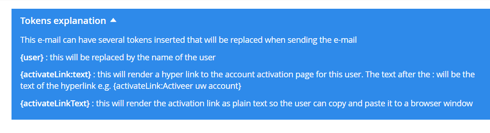
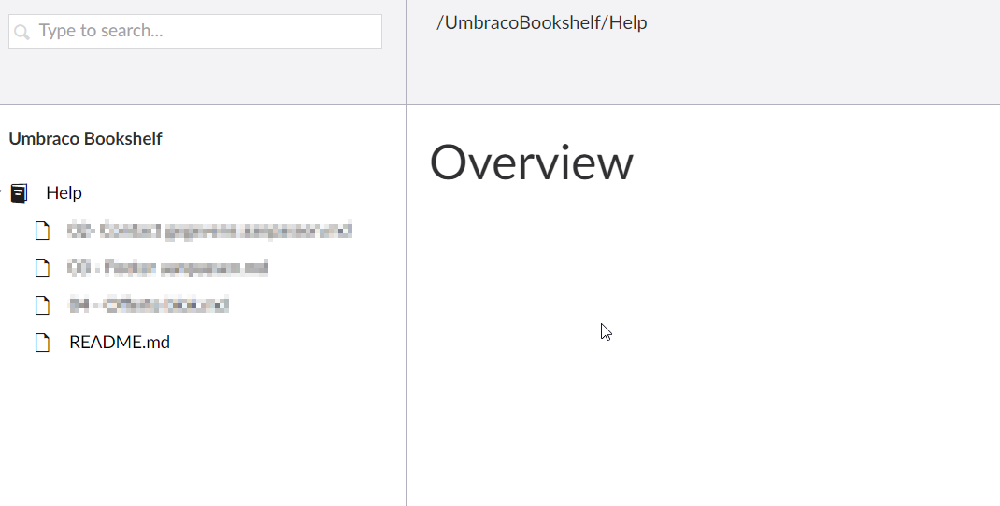
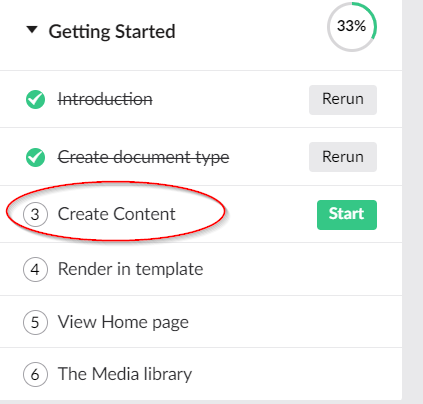
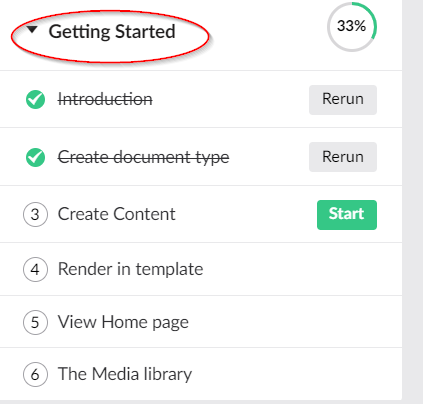
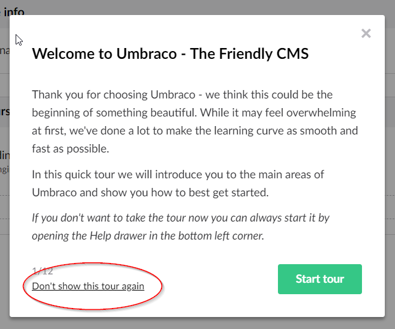
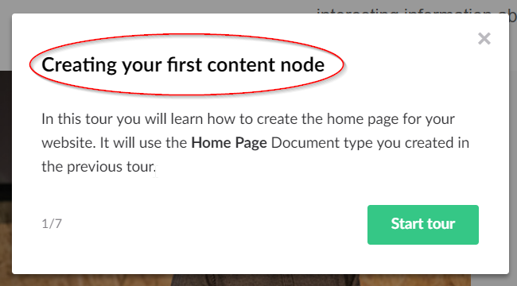
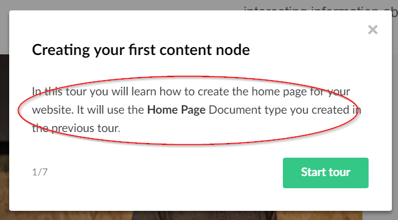
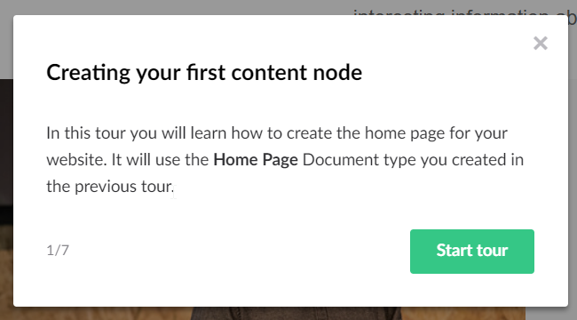
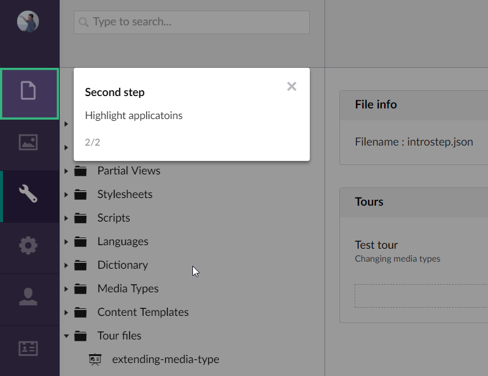
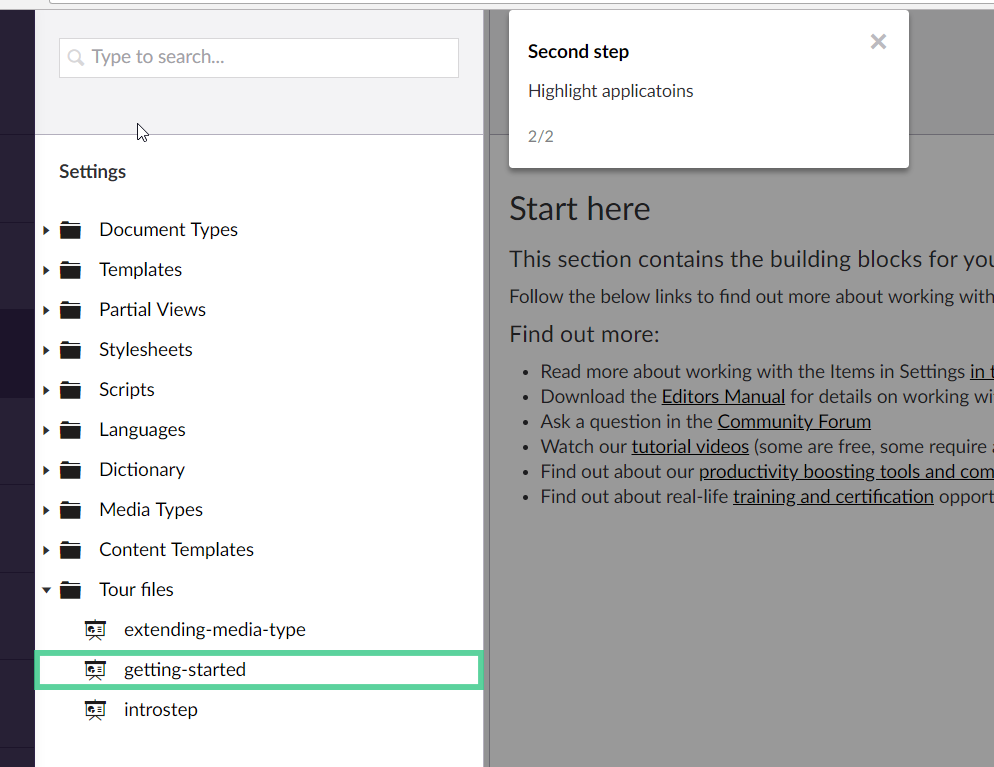

Introduction
- Dave Woestenborghs
- Work at Colours ( http://colours.nl)
- Been using Umbraco since 2008
- Umbraco MVP (2x), Package award winner, speaker, Core c-trib,...
What will we cover
- Integrated help. What other options
- What are tours ?
- How do we create and edit tours
- How can we customize them
- How can we use them
Property description

Property description
- Out of the box
- No markup possible
- Not suited for a long description
uEditor Notes
uEditor Notes
- Package by Marc Goodson
- Allows for Rich text
- But requires a datatype per unique help text
Bookshelf
Bookshelf
- Package by Kevin Giszewski
- Adds a new section to the backoffice
- Allows for writing help in markdown
- Feels more like a integrated manual, than help
What are Backoffice tours
A step by step, integrated and interactive tutorial of a specific task in the backoffice
What are Backoffice tours
- Can be found in the help section
- First demo at Codegarden 17
- Introduced in 7.8
- Great editor experience
- Under valued by HQ and community
Backoffice tours demo
Why so useful
- Integrated
- Interactive
- Can be resumed and restarted
- Customizable
Creating tours
- Tours are stored in a JSON file
- In /Config/BackofficeTours
- In /App_Plugins/<Plugin>/backoffice/tours/
- A tour file contains an array of tour objects
Tour object
{
"name": "Introduction",
"alias": "umbIntroIntroduction",
"group": "Getting Started",
"groupOrder": 100,
"allowDisable": true,
"culture" : "en-US",
"requiredSections": [],
"steps": []
}
Tour object - name
The name property is the name of the tour that is shown in the help section
Tour object - alias
The unique alias of the tour. Should be unique across all tours. Not only the ones in the current file
Tour object - group
The group property is used to related tours covering a similar topic
Tour object - groupOrder
The groupOrder property is used to control the order of groups
Tour object - allowDisable
Setting the allowDisable property to true will show a "Don't show this tour again" link
Tour object - culture
Set this to display the tour only for a specific culture, so you can create multilanguage tours (v7.11+)
Tour object - requiredSections
An array of section aliases. The user will need access to all these sections otherwise the tour will not be shown to the user
Tour object - steps
An array of step objects (JSON). Here you will list all the steps that are shown in the tour
Step object
{
"title": "Welcome to Umbraco - The Friendly CMS",
"content": "<p>This content</p>",
"type": "intro",
"element": null,
"elementPreventClick": false,
"backdropOpacity": null,
"event": null,
"view": null,
"eventElement": null,
"customProperties": null
}
Step object - title
The title of the step
Step object - content
The content of the step, can contain markup
Step object - type
Currently only one type is supported : "intro". This will center the step and show a "Start tour" button
Step object - element
A CSS selector for the element you wish to highlight. The tour step will position it self near the element
Use your dev tools from the browser to find the id, class, data-attribute...
Step object - element
Step object - elementPreventClick
Setting this to true will prevent that no javacript events are bound to the highlighted element. A "Next" button will be added
Step object - event
The javascript event that should trigger the next step e.g. click, hover,...
If not set a "Next" button will be added
Step object - eventElement
A CSS selector for the element you wish to bind the event to
If not set, the selector in the element property will be used
Step object - eventElement
Step object - backdropOpacity
A value between 0 and 1 to indicate how dark the background overlay wil be
Step object - view
Here you can enter a path to your own custom angular view that will be used for displaying the step
Useful for validation of entered values
Step object - customProperties
A json object that is passed to the scope of a custom view, so you can use this data in your view
But...
manually editing JSON is
- boring
- prone to errors
Enter Tour editor
A package that gives you a UI to create and edit tours
Tour editor demo
What is needed for a custom step
- A angular view
- A angular controller
- A package manifest file
- Set the view property of the step
- Optionally set customProperties on the step